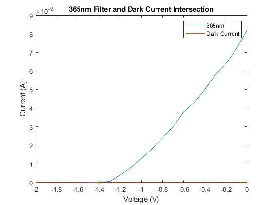
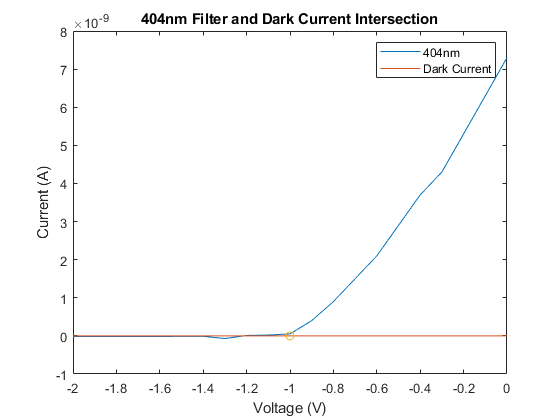
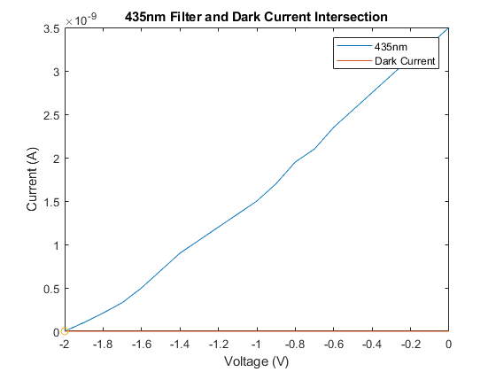
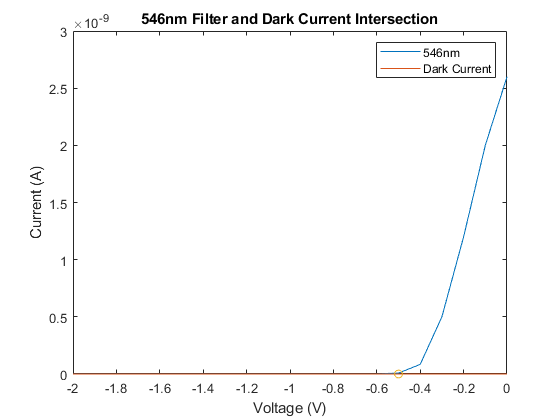
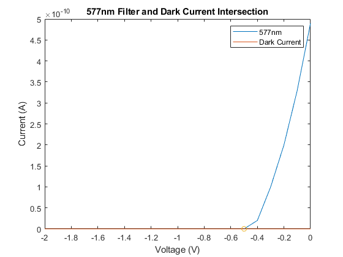
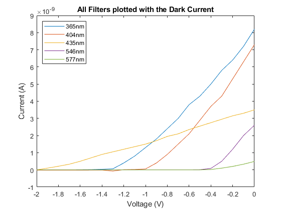
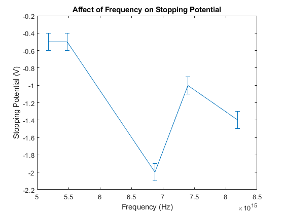

Contents
clear all; close all;
Voltage = [0,-.1,-.2,-.3,-.4,-.5,-.6,-.7,-.8,-.9,-1,-1.1,-1.2,-1.3,-1.4,-1.5,-1.6,-1.7,-1.8,-1.9,-2];
DarkCurrent = [0,0,0,0,0,0,0,0,0,0,0,0,0,0,0,0,0,0,0,0,0];
Current577 = [49,33,20,10,2,0,0,0,0,0,0,0,0,0,0,0,0,0,0,0,0].*10^-11;
Current435 = [35,33,31.5,29.5,27.5,25.5,23.5,21,19.5,17,15,13.5,12,10.5,9,7,5,3.3,2.1,1,0]*10^-10;
Current365 = [82,72,64,58,50,43,38,30,24,18,13,8,4,.6,.33,.13,.06,0,0,0,0]*10^-10;
Current546 = [26,20,12,5,.84,.08,.012,.008,.008,.008,.008,.008,.008,.008,.008,.008,.008,.008,.008,.008,.008]*10^-10;
Current404 = [73,63,53,43,37,29,21,15,9,4,.51,.22,.11,-.7,-.12,-.14,-.15,-.16,-.16,-.16,-.16]*10^-10;
f1=figure(1);
plot(Voltage,Current365)
hold on
plot(Voltage,DarkCurrent)
plot(-1.4,0,'o')
xlabel('Voltage (V)')
ylabel('Current (A)')
title('365nm Filter and Dark Current Intersection')
legend('365nm','Dark Current')
f2=figure(2);
plot(Voltage,Current404)
hold on
plot(Voltage,DarkCurrent)
plot(-1,0,'o')
xlabel('Voltage (V)')
ylabel('Current (A)')
title('404nm Filter and Dark Current Intersection')
legend('404nm','Dark Current')
f3=figure(3);
plot(Voltage,Current435)
hold on
plot(Voltage,DarkCurrent)
plot(-2,0,'o')
xlabel('Voltage (V)')
ylabel('Current (A)')
title('435nm Filter and Dark Current Intersection')
legend('435nm','Dark Current')
f4=figure(4);
plot(Voltage,Current546)
hold on
plot(Voltage,DarkCurrent)
plot(-0.5,0,'o')
xlabel('Voltage (V)')
ylabel('Current (A)')
title('546nm Filter and Dark Current Intersection')
legend('546nm','Dark Current')
f5=figure(5);
plot(Voltage,Current577)
hold on
plot(Voltage,DarkCurrent)
plot(-0.5,0,'o')
xlabel('Voltage (V)')
ylabel('Current (A)')
title('577nm Filter and Dark Current Intersection')
legend('577nm','Dark Current')
f6=figure(6);
plot(Voltage,Current365)
hold on
plot(Voltage,Current404)
plot(Voltage,Current435)
plot(Voltage,Current546)
plot(Voltage,Current577)
xlabel('Voltage (V)')
ylabel('Current (A)')
title('All Filters plotted with the Dark Current')
legend('365nm','404nm','435nm','546nm','577nm','location','northwest')
saveas(f1,'365nm.png')
saveas(f2,'404nm.png')
saveas(f3,'435nm.png')
saveas(f4,'546nm.png')
saveas(f5,'577nm.png')
saveas(f6,'allnm.png')
     
Problem 3
StoppingPot = [-1.4,-1.0,-2.0,-.5,-.5];
c = 2.99*10^9;
Wavelength = [365,404,435,546,577]*10^-9;
Frequency = c./Wavelength;
f7 = figure(7);
err = .1*ones(size(Frequency));
errorbar(Frequency,StoppingPot,err)
title('Affect of Frequency on Stopping Potential')
xlabel('Frequency (Hz)')
ylabel('Stopping Potential (V)')
saveas(f7,'stoppingpotvsfreq.png')
hact = 6.626*10^-34
e = 1.602*10^-19;
h = -(e*StoppingPot)./Frequency;
havg = mean(h)
errh = 7.8*10^-35
hact =
6.6260e-34
havg =
2.5144e-35
errh =
7.8000e-35

Problem 4
upperbound = havg+errh
percentdiff = (hact-havg)/((hact+havg)/2)
upperbound =
1.0314e-34
percentdiff =
1.8538
Problem 5
workfunction = ((havg*c)./Wavelength)/2
workfunction = mean(workfunction)
errworkfunction = 2*workfunction
me = 9.1*10^-31
v = sqrt((havg.*Frequency-workfunction)/(.5*me))
workfunction =
1.0e-18 *
0.1030 0.0930 0.0864 0.0688 0.0651
workfunction =
8.3290e-20
errworkfunction =
1.6658e-19
me =
9.1000e-31
v =
1.0e+05 *
5.1927 4.7533 4.4362 3.4579 3.2143